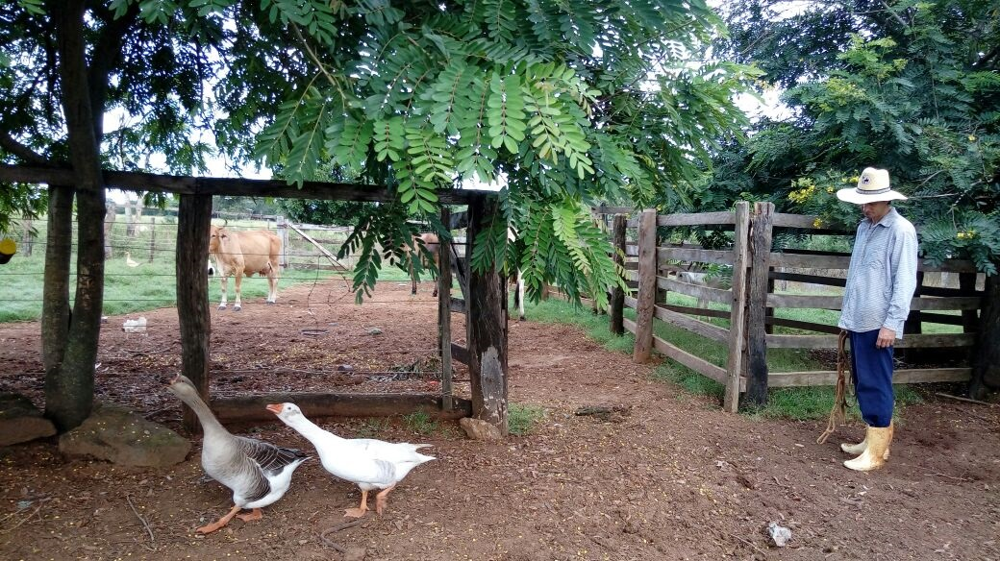
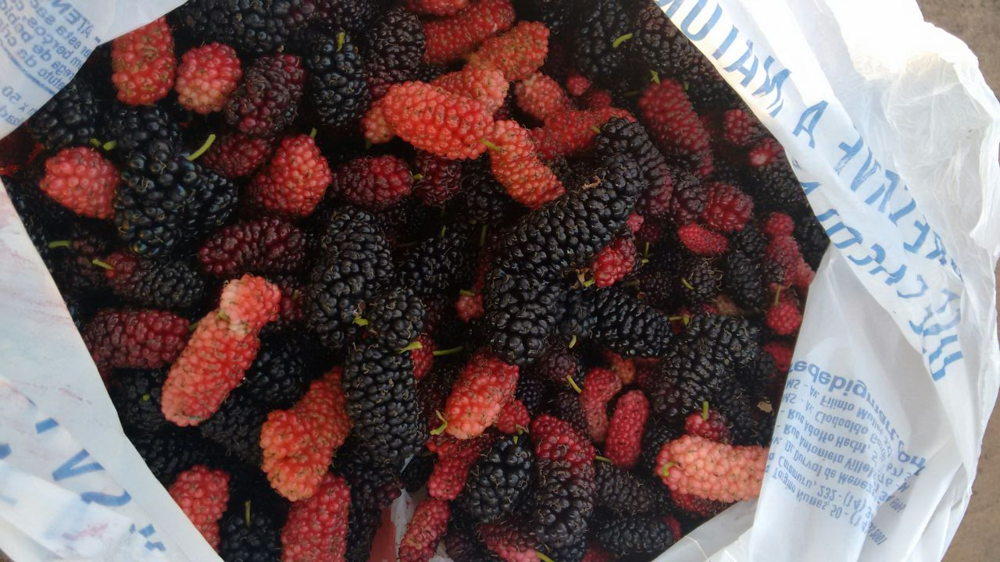
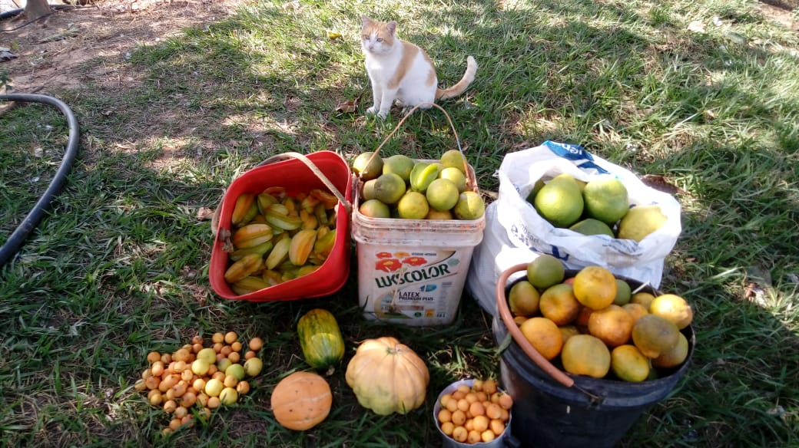
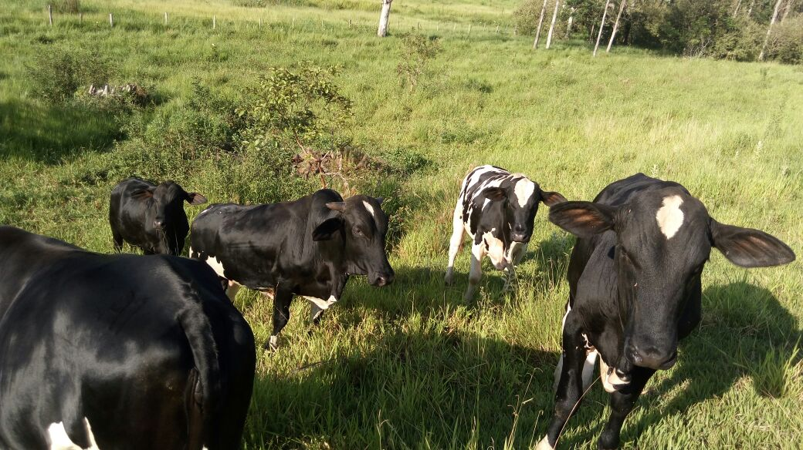

Patos, galinhas caipiras...

Vários tipos de árvores, que produzem frutos deliciosos!
 Bovinos
Animais
Devemos ficar atentos às necessidades dos animais, os quais muitas vezes não ficarão satisfeitos com a pastagem natural encontrada em volta dos pomares, sendo que será muitas vezes necessário que seja adotada o plantio de pastagem com uma melhor qualidade, possibilitando com isso a colocação de uma maior quantidade de animais.
- Cada animal necessita de um habitat natural e próprio para o mesmo.
- Nós garantimos a melhor qualidade de vida para eles!
- Ração equilibrada.